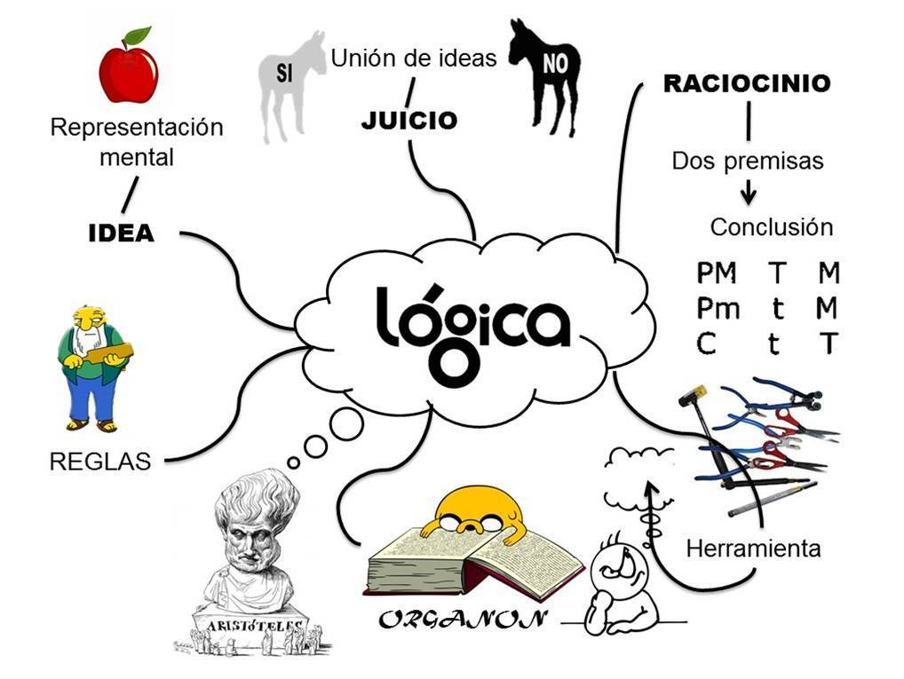
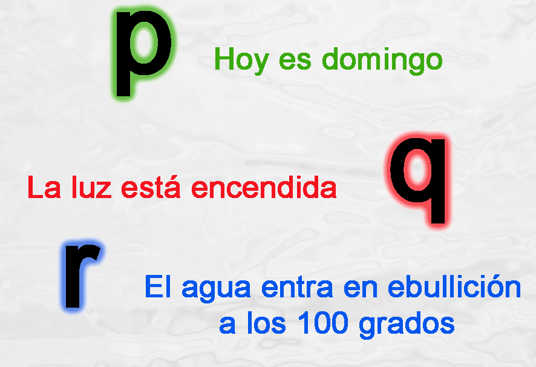

Introduccion
La formalizacion en logica proposicional consiste en traducir enunciados del lenguaje natural a un lenguaje formal utilizando simbolos logicos. Este proceso permite analizar y evaluar la validez de argumentos de manera precisa. Tambien se puede decir que es una rama de la logica matematica que estudia las proposi ciones, es decir, las afirmaciones o oraciones a las que se les puede asignar un valor de verdad.
Proposiciones y letras proposicionales
Una proposicion es una oracion declarativa que puede ser verdadera o falsa, pero no ambas. En logica proposicional, cada proposicion se representa mediante una letra proposicional, como (p, q o r...)
Conectores logicos
Los conectores logicos permiten combinar proposiciones para formar expresiones mas complejas:
- Conjuncion (∧) : p ∧q.
Es verdadera solo si ambas p y q son verdaderas. - Disyuncion (∨) : p ∨ q.
Es verdadera si al menos una de p o q es verdadera. - Negacion (¬): ¬p.
Es verdadera sipes falsa. - Condicional (→) :p → q.
Es falsa solo sip es verdadera y q es falsa. - Bicondicional (↔) : p ↔ q.
Es verdadera si p yqtienen el mismo valor de verdad
Ejemplos de Formalizacion
Consideremos los siguientes Ejemplos:1. ”Si llueve, entonces la calle esta mojada.”
- p: Llueve.
- q: La calle esta mojada.
La formalizacion de este enunciado es: p → q.
2. ”Un dia tiene 24 hora y una semana tiene 7 dias.”
- p: un dia tiene 24 horas.
- q: una semana tiene 7 dias
La formalizacion de este enunciado es: p ∧ q.
3.”Cermen canta o baila ”
- p: Carmen canta
- q: Carmen baila
La formalizacion de este enunciado es: p ∨ q.
4. ” Si y solo si Jorge gana dinero entoces sera solvente”
- p: Jorge gana dinero
- q: sera solvente
La formalizacion de este enunciado es: p ↔ q.
5.” No es cierto que lima sea capital de Peru”
- p:no es cierto que lima sea capital de Peru
La formalizacion de este enunciado es: ¬p .